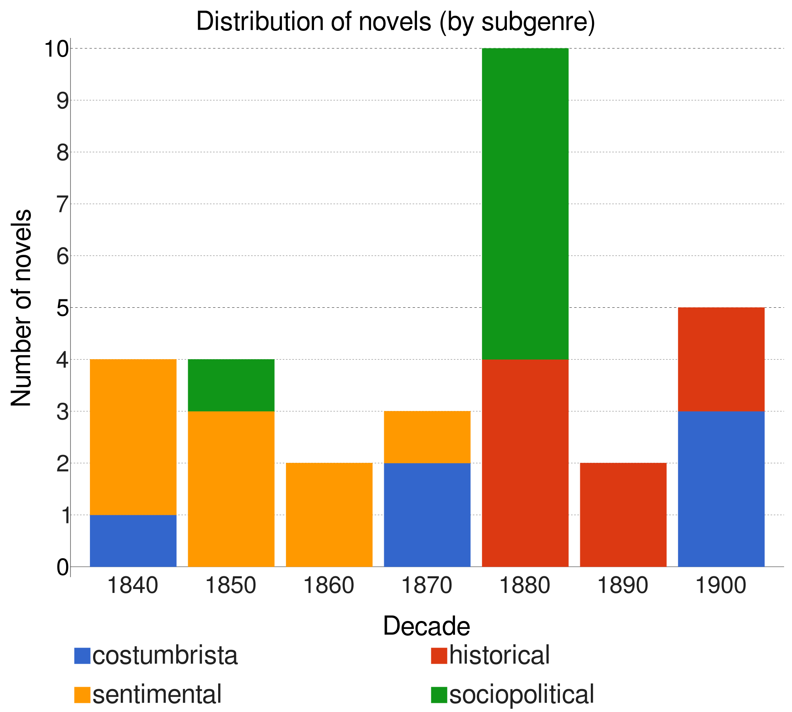
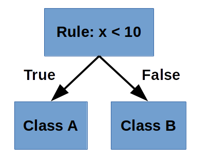
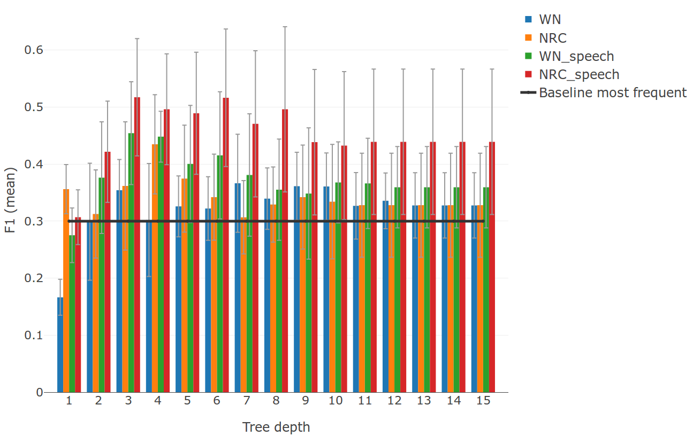
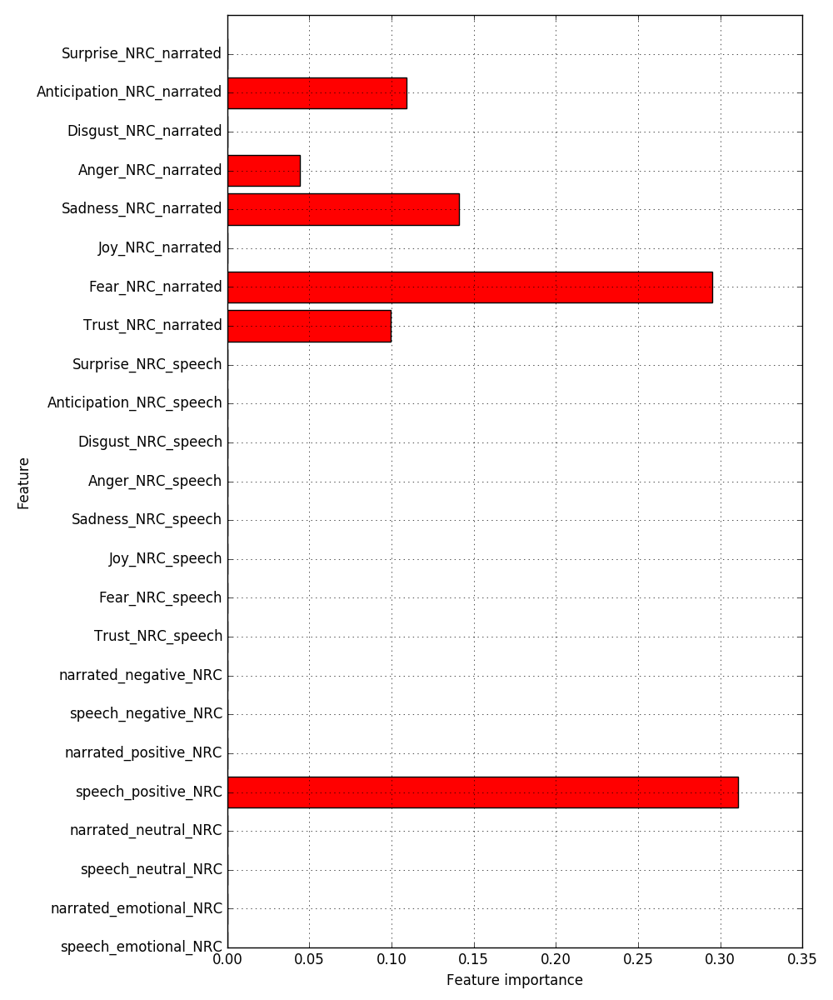
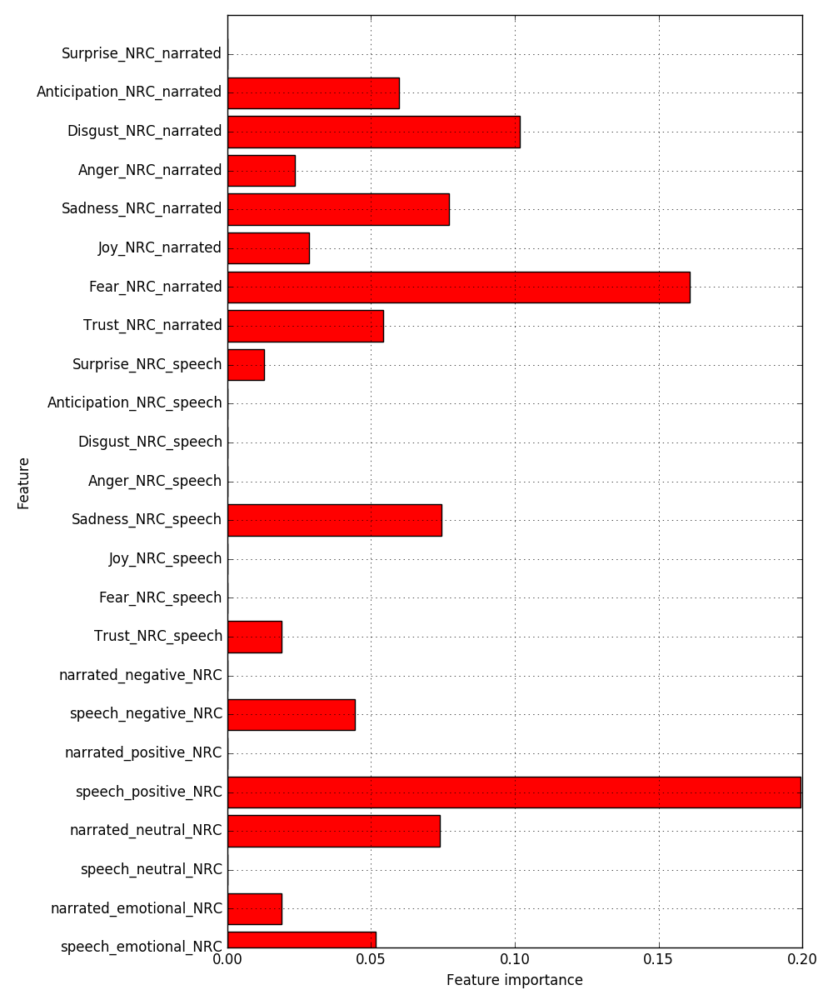
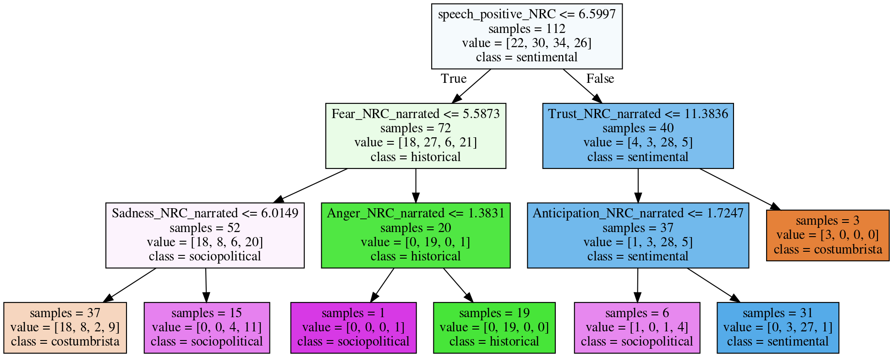

Exploration of Sentiments and Genre in Spanish American Novels
Ulrike Henny-Krahmer
(CLiGS, University of Würzburg)
DH2018
June 29, 2018
Slides at: https://hennyu.github.io/dh_18/


Overview
- Sentiments and Genre: Background, Aims, Hypotheses
- Data: Spanish American Novels
- Methods: Sentiment Analysis & Machine Learning
- Results and Discussion
1. Sentiments and Genre: Background, Aims, Hypotheses
Sentiments and Genre
- Sentiment Analysis: computational treatment of sentiment, opinion, emotion in text (Pang and Lee, 2008)
- Sentiments modelled as polarity values or emotion values
- Method has been used for genre analysis (Kim et al, 2017; Zehe et al., 2016)
- Here: analysis of Spanish American novels
Aims & Hypotheses
- Exploration of relationship between sentiments and genre in 19th c. Spanish-American novels
- Sentiments as linguistic manifestations of emotions on the textual surface
- Hypothesis 1: degree and kind of emotionality differs for different subgenres
- Hypothesis 2: it matters, whether emotions are expressed in direct speech or narrated text
- Sidegoal: test two sentiment lexica for Spanish
Sentence examples
from El Chacho by Eduardo Gutiérrez, 1884, military novel, narrated text:
Quiroga entretanto permanecía en Buenos Aires, bebiendo en la inspiración infame del tirano las más sangrientas ideas, y recibiendo las más terribles instrucciones. |
Quiroga, in the meantime, stayed in Buenos Aires, drinking the most blodthirsty ideas from the infamous inspiration of the tyrant, receiving the most terrible instructions. |
from Clemencia by Ignacio Manuel Altamirano, 1869, sentimental novel, direct speech:
— ¡Oh! sí podrá usted, Fernando, sí podrá usted. A una mujer tan hermosa como ésta, lo difícil, lo imposible es no amarla. Es demasiado encantadora para que el corazón de usted pueda permanecer indiferente. |
Oh! yes, you can, Fernando, yes, you can. It's difficult, impossible not to love a woman as beautiful as this one. She is too charming for your heart to remain indifferent. |
2. Data: Spanish American Novels
Data: Spanish American Novels
|

Distribution of novels per decade and subgenre |
3. Methods: Sentiment Analysis & Machine Learning
Methods: Sentiment features
Sentiment lexica:
|
|
Methods: Subgenre classification
|
 |
4. Results and Discussion
Sentence example
from Romualdo. Uno de tantos, by Francisco Calcagno, 1881, anti-slavery novel (narrated text)
SentiWordNet 3.0
| La | pluma | no | alcanza | a | describir | las | salvajes | peripecias | de | aquella | lucha | espantosa. |
| The | quill | not | accomplish | to | describe | the | ferocious | events | of | that | fight | frightening. |
| - | neutral | - | positive 0.125 |
- | neutral | - | negative 0.75 |
positive 0.125 |
- | - | neutral | negative 0.625 |
| negative 0.125 |
NRC Emotion Lexicon
| La | pluma | no | alcanza | a | describir | las | salvajes | peripecias | de | aquella | lucha | espantosa. |
| The | quill | not | accomplish | to | describe | the | ferocious | events | of | that | fight | frightening. |
| - | neutral | - | neutral | - | neutral | - | negative | - | - | - | negative | negative |
| Anger | Anger | Disgust | ||||||||||
| Fear | Fear | Fear |
Results for subgenre classification
Feature importance
|  | tree depth: 3 feature set: NRC speech |
Feature importance
|  | tree depth: 6 feature set: NRC speech |
Decision tree
tree depth: 3, feature set: NRC speech
Conlusions and Next Steps
- Classification by sentiment features: better understanding of how emotions are expressed linguistically in subgenres
- Distinction narrated text – direct speech matters
- For Spanish: NRC Emotion Lexicon better than SentiWordNet, relevance of 8 basic emotions
- Next: increase corpus size, use other classifiers, combine sentiment and other types of features
Thank you! - ¡Muchas gracias!
Slides at: https://hennyu.github.io/dh_18/
CLiGS: http://cligs.hypotheses.de/
References
- Baccianella, S., Esuli, A. and Sebastiani, F. (2010). SentiWordNet 3.0: An Enhanced Lexical Resource for Sentiment Analysis and Opinion Mining. Proceedings of LREC 2010. Valletta, Malta: ELRA: 2200-2204. http://www.lrec-conf.org/proceedings/lrec2010/summaries/769.html.
- Henríquez Miranda, C. and Guzmán, J. (2017). A Review of Sentiment Analysis in Spanish. Una Revisión Sobre el Análisis de Sentimientos en Español. TECCIENCIA 12 (22): 35-48. doi: 10.18180/tecciencia.2017.22.5.
- Hettinger, L., Jannidis, F., Reger, I. and Hotho, A. (2016). Classification of Literary Subgenres. DHd2016. Leipzig: Universität Leipzig: 154-158. http://dhd2016.de/boa.pdf.
- Kim, E., Padó, S. and Klinger, R. (2017). Prototypical Emotion Developments in Literary Genres. Digital Humanities 2017. Conference Abstracts. Montréal: McGill University. https://dh2017.adho.org/abstracts/203/203.pdf.
- Miller, G. A. (1995). WordNet: A Lexical Database for English. Communications of the ACM 38 (11), 39-41.
- Molina, H. B. (2011). Como crecen los hongos. La novela argentina entre 1838 y 1872. Buenos Aires: Teseo.
- Padró, L. and Stanislovsky, E. (2012). FreeLing 3.0: Towards Wider Multilinguality. Proceedings of the Language Resources and Evaluation Conference (LREC 2012). Istanbul, Turkey: ELRA: 2473-2479. http://nlp.Isi.upc.edu/publications/papers/padro12.pdf.
- Pang, B. and Lee, L. (2008). Opinion Mining and Sentiment Analysis. Foundations and Trends in Information Retrieval 2 (1-2): 1-135.
- Saif, M. and Turney, P. (2013). Crowdsourcing a Word-Emotion Association Lexicon. Computational Intelligence 29 (3), 436-465.
- Winko, S. (2003). Über Regeln emotionaler Bedeutung in und von literarischen Texten. In Jannidis, F., Lauer, G., Martínez, M., Winko, S. (eds.), Regeln der Bedeutung. Berlin: de Gruyter, pp. 329-348.
- Zehe, A., Becker, M., Hettinger, L., Hotho, A., Reger, I., and Jannidis, F. (2016): Prediction of Happy Endings in German Novels based on Sentiment Information. Proceedings of DMNLP, Workshop at ECML/PKDD. Riva del Garda, Italy. http://ceur-ws.org/Vol-1646/paper2.pdf
- Zó, R. E. (2015). Emociones escriturales. La novela sentimental latinoamericana. Saarbrücken: Editorial Académica Española.